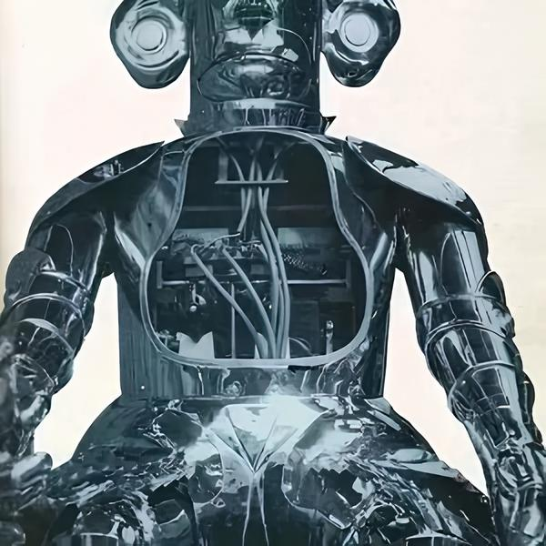

"Mr. Telecox" (1928, American engineer J. Wensley) is a robot that had an external resemblance to a human, capable of performing elementary movements on a command given by voice, and became an exhibit at the World's Fair in New York.
"Eric" (1928) is a robot who gave a short speech at the Exhibition of the British Association of Modeling Engineers.The Naturalist (1928, under the direction of Dr. Nishimura Makota) is a Japanese robot capable of using an electric drive to manipulate hands and head.
Subsequently, this android was considered the ancestor of robotics in Japan.Alpha (1932, English inventor Harry May) is a humanoid automaton that sat down and stood up, moved his hands and spoke according to voice commands.
"Sabor" (Austrian inventor August Huber) – automata that were controlled by radio and could talk, walk, perform various manipulations.B2M (1936, Moscow schoolboy Vadim Matskevich) is the first android robot in Russia.
In 1937, he was awarded the diploma of the World's Fair in Paris.
The first computers in which the von Neumann principle was put into practice were Howard Aiken's Mark I electromagnetic relay circuit computer (1944) and the ENIAC electronic computer, developed in 1947 under the direction of J. R. R. Tolkien.
Prosper Eckert and J. Mokli, who later became the founders of the famous IBM company.[4]
The first robots in the USA
